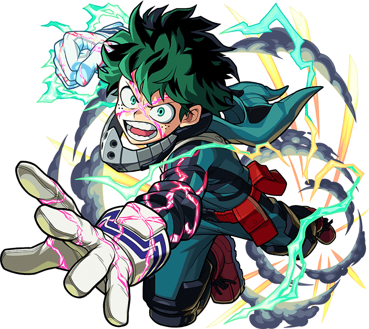
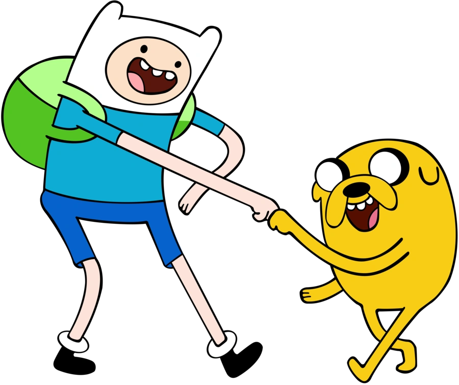

O mangá é o nome dado as histórias japonesas, que são bastante semelhantes as HQs (histórias em quadrinhos). A palavra que dá nome aos quadrinhos asiáticos surgiu da junção de dois vocabulários: man = involuntário e gá = desenho/imagem.
VER MAISAnime é um termo que define os desenhos animados de origem japonesa e também os elementos relacionados a estes desenhos. No Japão, anime se refere à animação em geral.
VER MAIS As histórias em quadrinhos são narrativas gráficas, ou seja, histórias narradas compostas por imagem e texto. Sua denominação varia entre arte sequencial (nome atribuído pelo famoso quadrinista americano Will Eisner), narrativa figurada e literatura ilustrada.
VER MAISO desenho animado surgiu no início do século XX, derivado de uma sequência de quadros feitos à mão. Na animação manual a ilustração é feita com lápis e papel e cada pose da personagem é desenhada separadamente para a criação de uma sequência lógica que dá a impressão de movimento.
VER MAIS 